01 【来源：长宁25二模·1】
查看所属专题已知集合 ，，则 ______。
答案与解析
答案
(0,1)
解析
与 的公共部分为 ，故 。
整卷阅读 · 教师版 · 21 题
按来源题号排列；内容来自分类汇编，仍需回源核对。
没有找到匹配题目。
已知集合 ，，则 ______。
(0,1)
与 的公共部分为 ，故 。
复数 ，，则 ______。
8 +i
由 ，得 。
所以 。
已知数列 是等差数列，且 ，，则其前7项和 ______。
77
公差 ，所以 。于是 。
某水果店的苹果，60%来自 基地，40%来自 基地， 基地苹果的新鲜率为90%， 基地苹果的新鲜率为85%，从该水果店随机选取一个苹果，则选到新鲜苹果的概率是______。
由已知结合全概率公式求解即可.
设选取的苹果来自A基地为事件M，选取的苹果来自B基地为事件N，选到新鲜苹果为事件
所以
所以
所以从该水果店随机选取一个苹果，则选到新鲜苹果的概率是0.88.
故答案为：0.88.
为了研究吸烟习惯与慢性气管炎患病的关系，某疾病预防中心对相关调查数据进行了研究，假设 ：患慢性气管炎与吸烟没有关系，并通过计算得到统计量 ，则可推断______原假设 。（填“拒绝”或“接受”，规定显著性水平 ，。）
拒绝
在独立性检验中，当计算得到的统计量 大于临界值时，就拒绝原假设，即可求解.
已知显著性水平α = 0.1, ，即临界值为2.706,
因为3.468>2.706，所以可推断拒绝原假设
故答案为：拒绝.
已知随机变量 的分布是
则其方差 ______。
，，所以 。
已知 ，，用 表示 为______。
，所以 ；又 。换底得 。
顶角为 的等腰三角形被称为黄金三角形，其底边和腰之比正好为黄金比 ，用黄金比 表示 ______。
把两腰长度取为1，则底边长为 。余弦定理给出 ，所以 。
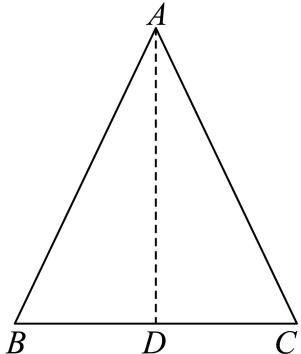
一项过关游戏的规则规定：在第 关要投掷骰子 次，如果这 次投掷所得的点数之和大于 ，则算过关，问一个人连过第一、二关的概率为______。
第一关需点数为4、5、6，概率 。
第二关两次之和为7至12，分别有6、5、4、3、2、1种有序结果，概率为 。
各次投掷独立，连过两关的概率为 。
已知点 分别是三角形 的边 的中点，且 ，，则三角形 的面积的取值范围是______。
(0,4]
令 为重心，取 为原点，记 ，则 ，且 ，。
由行列式面积公式， 其中 为两个重心向量的夹角。
非退化三角形要求 ；所有非平行夹角都可构造对应三角形。
因此面积取遍 。
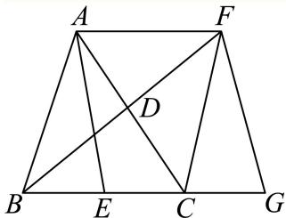
现有一块正四面体木料 ，其边长为3，现需要将木料进行切割，要求切割后底面 上任意一点 到顶点 的距离不大于 ，则切割好后，木料体积的最大值是______。（结果保留 ）
按原解析“保留以 为顶点的锥体”模型，设底面中心为 。
有 ，高 ，所以 等价于底面内 。
保留底面为三角形与单位圆盘的交集。
三角形各边到 的距离为 ，每个圆弓形的圆心角为 ，面积为 。
三个弓形互不重叠，故底面积 ，锥体体积为 。
此最大值依赖于保留同一顶点锥体的切割方式；原题若允许任意切割，仅限制原底面点，尚不足以唯一确定该体积最大值。
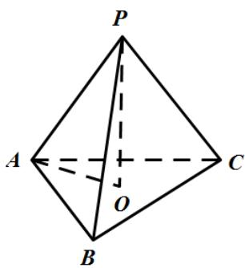
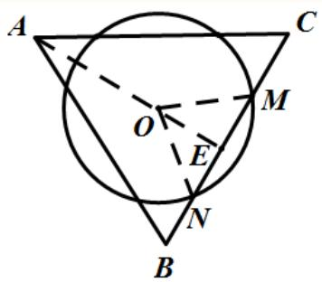
已知函数 和 ，其中 ，且 是定义在 上的函数，其图像关于原点对称，当 时，。若对任意的 ，存在 ，使得 ，则 的取值范围是______。
[3,5]
在 上的值域为 ，题意等价于 。
由奇性 ，若记 ，则 。
当 时，正半轴分支递增，，与0之间有空隙，不满足。
当 时，顶点在 ，，下端为正，仍有空隙。
当 时，顶点在 ，，下端仍为正，仍不满足。（此处右端来自 ，不取到。）
当 时，分支在 严格递减，。若 ，整个区间与0分离；若 ，整个区间为负且与0分离，均不能覆盖0附近所有数。
若 ，有 。
要覆盖 ，只需并且必须正分支达到1或负分支达到 ：即 ，或 。
分别给出 和 ，两者并集为 ，端点也成立。
故答案为 。
已知非零实数 ，则下列命题中成立的是（ ）。
A.
B.
C.
D.
D
A：取 ，则 但 ，错误。
B：当 时，从 得 ，错误。
C：当 异号时， 在实数范围无定义，不能必然成立。
D： 在 上严格递增，所以 。选 D。
某书店为了分析书籍销量与宣传投入之间的关系，对宣传投入 （千元）和书籍销量 （百本）的情况进行了调研，并统计得到表中几组对应数据，同时用最小二乘法得 关于 的线性回归方程为 ，则下列说法不正确的是（ ）。
| 3 | 4 | 5 | 6 | |
|---|---|---|---|---|
| 5 | 6.2 | 7.4 |
A. 变量 之间呈正相关
B. 预测当宣传投入2千元时，书籍销量约为400本
C.
D. 拟合误差
C
最小二乘回归直线必须经过样本中心。
由 及给定直线，得 ，代入表中各项总和可得来源所给结果 。
但代回这组数据重新计算最小二乘斜率，得到 ，不是题设的 。
因此现有数据与“该直线为最小二乘回归直线”的前提不相容； 只是利用回归中心点性质得到的必要值，不能消除矛盾。
来源整理素材给出的参考答案为 C，仍需核实题源。
如图，等腰直角三角形 中，，点 是边 的中点，点 是边 上一点（不与 重合），将三角形 沿 逆时针翻折，点 的对应点是 ，连接 ，设 为二面角 大小，。在翻折过程中，下列说法当中不正确的是（ ）。
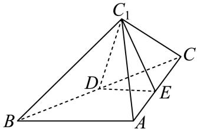
A. 存在点 和 ，使得
B. 存在点 和 ，使得
C. 存在点 和 ，使得
D. 存在点 和 ，使得
B
对于 A、D，取 为 中点，。
由中位线知 ，故 。
折叠保角，，此时二面角的平面角为 ，所以 。
于是 平面 ，得 ，A 成立。
又 同时垂直 ，故 平面 ，从而 ，D 成立。
对于 C，过 作 ，垂足 在线段 内，取 。
折叠前后 都垂直 ，所以 平面 ，从而 ，C 成立。
对于 B，若 ，因 ，则 平面 ，故 。
是 中点，勾股定理给出 ，但折叠保持 ，矛盾。
因此 B 不成立，选 B。
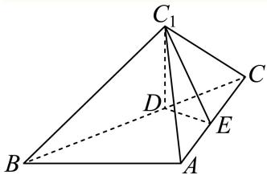
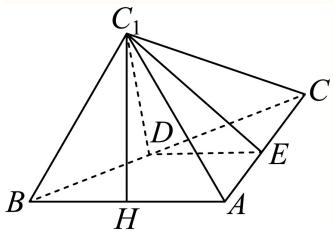
椭圆具有如下光学性质：如图，， 分别是椭圆 的左、右焦点，从点 发出的光线在到达椭圆上的点 后，经过到达点的切线反射后经过点 ，有以下两个命题：
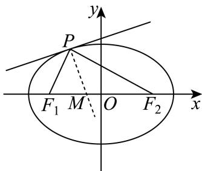
① 若 是椭圆上除长轴端点外的一点，设法线与 轴的交点为 ，则 ；
② 若从 发出的光线，经椭圆两次反射后，第一次回到 ，所经过的路程为 ，则该椭圆的离心率为 。
则以下说法正确的是（ ）。
A. ①是真命题，②是真命题
B. ①是真命题，②是假命题
C. ①是假命题，②是真命题
D. ①是假命题，②是假命题
A
① 设 ，由隐函数求导，椭圆切线斜率 。
当 时，法线与 轴交于 ，由垂直关系 得 。
当 时法线为 ，同样 。
由于排除长轴端点，，所以 ，①为真。
② 设两次反射点为 ，光路为 ，总路程为 。
故 ，，②为真。
选 A。
已知向量 ，，。
（1）求函数 的单调递减区间；
（2）若函数 在区间 上恰有2个零点，求实数 的取值范围。
（1）由数量积及倍角公式， 令 ，得单调递减区间 ，。
（2）令 ，则 ，问题化为 恰有两解。
正弦在左段 递增，在右段 递减。
右端点不取，值为 ，最高点值为1，所以恰有两解当且仅当 ，即 。
如图，在直三棱柱 中，，，，点 是棱 的中点。
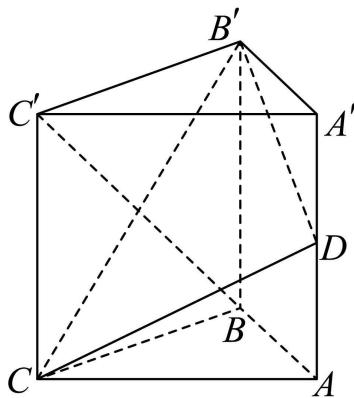
（1）求证：平面 平面 ；
（2）求点 到平面 的距离以及三棱锥 的体积。
（1）证明见解析。（2）距离 ；体积 。
（1）连接 与 交于 ，取 中点 ，连接 。
由 得 。
直棱柱中底面 与侧面 垂直，其交线为 ，故 平面 。
是 中点， 是 中点，故 且 。
而 且 ，所以 是平行四边形，。
于是 平面 ，又 平面 ，故两平面垂直。
（2）由题设，，，，。
且 ，故 。
于是 换底计算同一四面体，。
设 到平面 的距离为 ，则 ，得 。
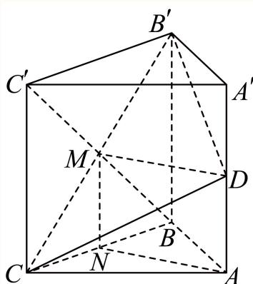
校订说明：原解析曾将 的中点归属对调，现按题干恢复。
为响应国家促进消费的政策，某大型商场举办了“消费满减乐翻天”的优惠活动，顾客消费满800元（含800元）可抽奖一次，抽奖方案有两种（顾客只能选择其中的一种）。
方案1：从装有5个红球，3个蓝球（形状、大小完全相同）的抽奖盒中，有放回地依次摸出3个球。每摸出1次红球，立减150元，若3次都摸到红球，则额外再减200元（即总共减650元）；
方案2：从装有5个红球，3个蓝球（形状、大小完全相同）的抽奖盒中，不放回地依次摸出3个球。中奖规则为：若摸出3个红球，享受免单优惠；若摸出2个红球，则打5折；其余情况无优惠。
（1）顾客 选择抽奖方案2，已知他第一次摸出红球，求他能够享受优惠的概率；
（2）顾客 恰好消费了800元。
① 若他选择抽奖方案1，求他实付金额的分布列和期望（结果精确到0.01）；
② 试从实付金额的期望值分析顾客 选择何种抽奖方案更合理。
(2)①分布列见解析，E(X) ≈469.92；②选择方案2
（1）已知第一次摸到红球后，剩4红3蓝。
能享受优惠等价于后两次至少有一个红球，因此条件概率为 。
（按有序计数也为 。
）
（2）① 有放回抽取时每次红球概率 ，红球个数 。 时实付金额依次为800、650、500、150元，故分布列为
其中各概率分别为 。于是
② 不放回方案中，设实付金额为 。
无优惠（0或1个红球）概率为 ；2个红球概率为 ；3个红球概率为 。
所以 因 ，按实付金额期望较低的标准，应选方案2。
已知双曲线 的左、右焦点分别为 ，点 是其左顶点，点 是双曲线上一点，且位于第一象限，若双曲线 的离心率 ，。
（1）求双曲线 的方程；
（2）若三角形 是等腰三角形，求点 的坐标；
（3）直线 不垂直于 轴，且与曲线 的另一个交点为 ，若 是锐角，求直线 的斜率的取值范围。
P (4, 6)或
（1）离心率 ，，所以 ，得 。方程为 。
（2），设 ，。
若 ，则 ，不合要求。
若 ，联立 与 ，得 。
若 ，联立 ，得
（3）设割线为 ，两交点横坐标为 。
因有两个交点，；代入双曲线得 其判别式 。
由韦达定理，，。
锐角条件为 所以 或 。
此外，直线必须经过第一象限的右支点：右支斜率函数 在 为负，在 大于 ，故 或 。
综合得到 校订：恢复原解析离心率等式为2，并修正数量积不等式中误写的方向。
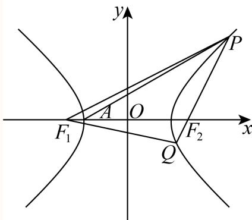
已知函数 的定义域 ，对任意实数 ，定义集合 。
（1）已知 ，求 ；
（2）已知 ，若集合 只有一个元素，求 的值；
（3）已知 ，其中 且 ，求证：集合 是一个区间。
1
见详解
（1），且 解得 或 ，故 。
（2）令 ，所求集合为 。
若 ，则 ，集合为空。
若 ，则 ，且 时 ， 时 ，所以解集为一个左侧无穷区间，不会只有一元素。
若 ， 先减后增，唯一最小值在 处，且 。解集恰有一元素当且仅当最小值为0，得 ，此时 。
校订说明：原解在 时由递增误推“所有 均有 ”，上述分情形论证已修正。
（3）令 ，。则 注意原解此因式分解中间一步漏了负号。又 、。
当 时，，除 外严格为负，所以 严格递减， 的解集是右侧区间。
当 时， 在 递减，在 递增，在 递减。
局部极大值 ，故它在首个递减段从正到负仅穿过0一次，之后始终为负，解集为 。
当 时， 在 递减，在 递增，在 递减。
局部极小值 ，故前两段恒正，最后一段从正到负仅穿过0一次，解集仍为 。
综上 是一个区间。
校订说明：原解析对非正参数的讨论及第（3）问因式分解存在错误，以上已按导数符号与边界情形修正。